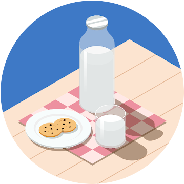

～ABOUT～

K.Y. 入社１年目 青森県出身🍎
現在は研修を通してWeb開発について学んでいます。
新しいことを学ぶのが好きで、
分からないこともまずは自分で調べながら取り組むことを意識しています。
まだ未熟ですが、一日でも早く成長できるよう頑張ります！
～SKILLS～
現在はHTML / CSS / JavaScript を中心に学習しています。
フロントエンド研修では、
簡易アプリ制作を通してユーザー視点を意識したUI作りを経験しました。
今後はバックエンド技術も学び、
幅広く開発に携われるエンジニアを目指しています。
～PERSONAL～
休日は映画を見たり、カフェ巡りをしたりして過ごしています。
最近はプログラミング学習の合間に散歩をするのがリフレッシュ方法です。
おすすめの映画やカフェがあれば、ぜひ教えてください！
～MESSAGE～
就職活動中は、不安や焦りを感じることも多いと思います。
私自身も「自分に合う会社はどこだろう」と悩みながら就活をしていました。
ですが、たくさん調べて行動した経験は、必ず自分の力になります。
完璧を目指しすぎず、自分らしさを大切にしながら頑張ってください！
皆さんと一緒に働ける日を楽しみにしています😊
～MEMBERS～

文系卒子